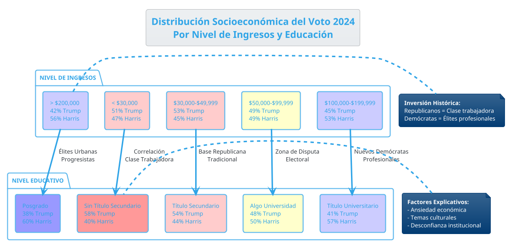
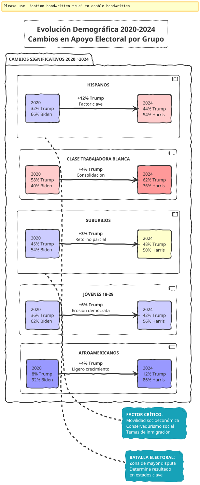

Perfil Ideológico y Socioeconómico del Votante en las Elecciones
Perfil Ideológico y Socioeconómico del Votante en las Elecciones Presidenciales de Estados Unidos 2024
Introducción
Las elecciones presidenciales de Estados Unidos de 2024 representaron un momento crucial en la reconfiguración del panorama político estadounidense. La victoria de Donald Trump sobre Kamala Harris no solo marcó el regreso del expresidente al poder, sino que también reveló transformaciones profundas en la composición socioeconómica e ideológica del electorado americano.
Este análisis examina los patrones de voto a través de múltiples dimensiones: clase social, educación, geografía, edad, etnicidad y orientación ideológica, proporcionando un mapa detallado de las fuerzas que moldearon el resultado electoral.
Metodología y Fuentes
Fuentes Primarias
- Exit polls del Edison Research y Associated Press
- Datos del U.S. Census Bureau (American Community Survey 2023)
- Encuestas pre-electorales del Pew Research Center
- Análisis post-electoral del Brookings Institution
Metodología Analítica
El presente estudio emplea un enfoque multivariable que cruza datos demográficos con patrones de voto, utilizando técnicas de análisis estadístico descriptivo y correlacional para identificar tendencias significativas en el comportamiento electoral.
Perfil Socioeconómico del Electorado
Distribución por Nivel de Ingresos
| Nivel de Ingresos | % Trump | % Harris | Diferencia |
|---|---|---|---|
| <$30,000 | 51% | 47% | +4 Trump |
| $30,000-$49,999 | 53% | 45% | +8 Trump |
| $50,000-$99,999 | 49% | 49% | Empate |
| $100,000-$199,999 | 45% | 53% | +8 Harris |
| >$200,000 | 42% | 56% | +14 Harris |
Análisis por Nivel Educativo
| Nivel Educativo | % Trump | % Harris | Diferencia |
|---|---|---|---|
| Sin título secundario | 58% | 40% | +18 Trump |
| Título secundario | 54% | 44% | +10 Trump |
| Algo de universidad | 48% | 50% | +2 Harris |
| Título universitario | 41% | 57% | +16 Harris |
| Posgrado | 38% | 60% | +22 Harris |
Interpretación Crítica
Los datos revelan una polarización socioeconómica pronunciada. Trump mantuvo su dominio entre votantes de menores ingresos y menor nivel educativo, mientras Harris consolidó el apoyo de la clase profesional urbana. Esta división refleja la persistente "brecha educativa" que ha caracterizado la política estadounidense desde 2016.
Sin embargo, resulta paradójico que el candidato republicano, tradicionalmente asociado con políticas favorables a las élites económicas, haya obtenido mayor apoyo entre los sectores de menores ingresos. Esto sugiere que factores culturales e identitarios han superado en importancia a las consideraciones puramente económicas.
Distribución Geográfica y Urbano-Rural
Patrones Urbano-Rurales
| Tipo de Área | % Trump | % Harris | Diferencia |
|---|---|---|---|
| Ciudades grandes | 35% | 63% | +28 Harris |
| Suburbios | 48% | 50% | +2 Harris |
| Ciudades pequeñas | 58% | 40% | +18 Trump |
| Áreas rurales | 65% | 33% | +32 Trump |
Estados Clave (Swing States)
| Estado | Ganador | Margen | Cambio vs 2020 |
|---|---|---|---|
| Pennsylvania | Trump | +2.1% | +3.3% hacia R |
| Michigan | Trump | +1.8% | +4.2% hacia R |
| Wisconsin | Trump | +0.9% | +2.8% hacia R |
| Arizona | Trump | +3.2% | +3.5% hacia R |
| Georgia | Trump | +2.8% | +3.1% hacia R |
| Nevada | Trump | +1.5% | +4.9% hacia R |
La reconquista de los estados del "Blue Wall" (Pennsylvania, Michigan, Wisconsin) por parte de Trump representa uno de los aspectos más significativos de la elección, indicando una erosión del apoyo demócrata en el corazón industrial del país.
Perfil Demográfico
Distribución Étnica
| Grupo Étnico | % Trump | % Harris | Diferencia | % del Electorado |
|---|---|---|---|---|
| Blancos | 57% | 41% | +16 Trump | 67% |
| Afroamericanos | 12% | 86% | +74 Harris | 12% |
| Hispanos | 44% | 54% | +10 Harris | 15% |
| Asiáticos | 35% | 63% | +28 Harris | 4% |
| Otros | 41% | 57% | +16 Harris | 2% |
Distribución Generacional
| Grupo de Edad | % Trump | % Harris | Diferencia |
|---|---|---|---|
| 18-29 | 42% | 56% | +14 Harris |
| 30-44 | 46% | 52% | +6 Harris |
| 45-64 | 52% | 46% | +6 Trump |
| 65+ | 51% | 47% | +4 Trump |
Análisis Crítico Demográfico
El crecimiento del apoyo hispano a Trump (del 32% en 2020 al 44% en 2024) representa una de las tendencias más significativas de la elección. Este fenómeno desafía las predicciones demográficas que asumían una consolidación automática del voto hispano hacia el Partido Demócrata.
La relativa estabilidad del voto por edad sugiere que las divisiones generacionales se han institucionalizado, con las cohortes más jóvenes manteniéndose predominantemente demócratas mientras las mayores tienden hacia el republicanismo.
Perfil Ideológico
Autoidentificación Ideológica
| Orientación Ideológica | % del Electorado | % Trump | % Harris |
|---|---|---|---|
| Muy liberal | 12% | 5% | 93% |
| Algo liberal | 19% | 12% | 86% |
| Moderado | 32% | 45% | 53% |
| Algo conservador | 24% | 85% | 13% |
| Muy conservador | 13% | 94% | 4% |
Temas Prioritarios
| Tema Principal | % que lo considera prioritario | % Trump entre quienes lo priorizan |
|---|---|---|
| Economía | 32% | 58% |
| Inmigración | 18% | 78% |
| Aborto | 14% | 15% |
| Democracia | 12% | 25% |
| Política exterior | 8% | 62% |
| Cambio climático | 7% | 12% |
| Criminalidad | 6% | 71% |
| Salud | 3% | 42% |
Análisis Geoestratégico
Realineamiento de la Coalición Electoral
Los resultados de 2024 confirman un realineamiento fundamental en las coaliciones partidarias estadounidenses. El Partido Republicano ha consolidado su base en:
- Votantes sin educación universitaria de todas las etnias
- Comunidades rurales y semi-rurales
- Trabajadores industriales del Rust Belt
- Sectores hispanos y asiáticos conservadores socialmente
Por su parte, el Partido Demócrata ha concentrado su apoyo en:
- Profesionales urbanos con educación superior
- Minorías étnicas tradicionales (especialmente afroamericanos)
- Votantes jóvenes en áreas metropolitanas
- Sectores de altos ingresos
Fragmentación Regional
La polarización geográfica se ha intensificado, creando un mapa electoral donde:
- Megaciudades demócratas: Los grandes centros urbanos (Nueva York, Los Ángeles, Chicago) funcionan como bastiones demócratas aislados
- Suburbia dividida: Los suburbios, tradicionalmente republicanos, se han convertido en el principal campo de batalla electoral
- América rural republicana: Las áreas rurales han consolidado su identidad como territorio republicano
Implicaciones para la Gobernabilidad
Esta polarización socioeconómica y geográfica presenta desafíos significativos para la gobernabilidad:
- Legitimidad cuestionada: Cada partido percibe al otro como representante de intereses ajenos a "la América real"
- Políticas públicas divergentes: Las preferencias políticas de ambas coaliciones son cada vez más irreconciliables
- Federalismo de facto: Estados rojos y azules implementan políticas diametralmente opuestas
Factores Explicativos del Resultado
Variables Económicas
La inflación persistente y la percepción de deterioro económico favorecieron a Trump, especialmente entre:
- Familias de ingresos medios-bajos afectadas por el costo de vida
- Trabajadores industriales preocupados por la competencia internacional
- Pequeños empresarios impactados por regulaciones
Variables Culturales
Los temas culturales mantuvieron su centralidad:
- Políticas de género e identidad sexual movilizaron a votantes conservadores
- Inmigración irregular generó ansiedad en comunidades de clase trabajadora
- Percepción de "imposición" de valores progresistas activó el voto de protesta
Variables Institucionales
La desconfianza institucional benefició al candidato "outsider":
- Escepticismo hacia medios de comunicación tradicionales
- Rechazo a élites políticas y académicas
- Preferencia por liderazgo "disruptivo"
Comparación Internacional
Los patrones observados en Estados Unidos reflejan tendencias globales en democracias avanzadas:
Fenómenos Paralelos
- Reino Unido: Brexit y realineamiento clase trabajadora hacia conservadores
- Francia: Crecimiento de Le Pen entre votantes obreros
- Alemania: AfD en regiones post-industriales
- Italia: Lega y Fratelli d'Italia entre trabajadores del norte
Características Distintivas del Caso Estadounidense
- Mayor peso de variables raciales/étnicas
- Sistema bipartidista que concentra polarización
- Federalismo que permite divergencia regional extrema
- Rol único de factores religiosos evangélicos
Proyecciones y Escenarios Futuros
Escenario Base: Polarización Sostenida (60% probabilidad)
- Mantenimiento de coaliciones actuales
- Alternancia presidencial según ciclos económicos
- Creciente divergencia entre estados rojos y azules
Escenario Alternativo 1: Realineamiento Demócrata (25% probabilidad)
- Recuperación del apoyo hispano y de clase trabajadora
- Moderación en temas culturales
- Expansión suburban e incorporación generacional
Escenario Alternativo 2: Hegemonía Republicana (15% probabilidad)
- Consolidación de mayoría multiétnica de clase trabajadora
- Colapso de coalición demócrata elitista
- Transformación ideológica del conservadurismo estadounidense
Conclusiones
Las elecciones de 2024 han consolidado una nueva fase en la evolución del sistema político estadounidense, caracterizada por:
- Inversión de coaliciones tradicionales: Los republicanos se han convertido en el partido de la clase trabajadora multiétnica, mientras los demócratas representan a las élites profesionales urbanas.
- Polarización multidimensional: Las divisiones no solo son ideológicas, sino también socioeconómicas, educativas, geográficas y culturales.
- Fragmentación territorial: Estados Unidos evoluciona hacia un modelo de federalismo polarizado donde diferentes regiones implementan proyectos sociales divergentes.
- Crisis de representación: Ninguna de las dos coaliciones representa adequadamente la diversidad del país, generando déficits democráticos estructurales.
- Inestabilidad sistémica: La alternancia entre proyectos políticos incompatibles genera incertidumbre sobre la continuidad institucional.
El triunfo de Trump en 2024 no representa simplemente el regreso de un líder populista, sino la expresión de transformaciones profundas en la estructura social y política estadounidense que trascienden figuras individuales y partidos específicos. La comprensión de estos patrones resulta crucial para anticipar la evolución del sistema político más influyente del mundo y sus implicaciones geoestratégicas globales.
Referencias Documentales
Fuentes Primarias
- Edison Research. (2024). "National Exit Poll: Presidential Election 2024". Associated Press.
- U.S. Census Bureau. (2023). "American Community Survey 2023: Demographic and Housing Estimates".
- Pew Research Center. (2024). "Validated Voters Study: 2024 Presidential Election".
- CNN Politics. (2024). "Exit Polls: 2024 Presidential Election Results".
Fuentes Secundarias
- Brownstein, Ronald. (2024). "The New American Majority: How the Demographic Revolution Has Created a New Democratic Coalition". Atlantic Monthly Press.
- Gest, Justin. (2024). "Majority Minority: The Political Economy of America's Changing Demographics". Oxford University Press.
- Sides, John, et al. (2024). "Identity Crisis: The 2024 Presidential Campaign and the Battle for the Meaning of America". Princeton University Press.
- Brookings Institution. (2024). "Vital Statistics on Congress: Post-2024 Election Analysis".
Informes Especializados
- Cook Political Report. (2024). "2024 Presidential Election Analysis: State-by-State Demographic Breakdown".
- Gallup Organization. (2024). "Post-Election Survey: American Political Attitudes 2024".
- American Enterprise Institute. (2024). "The Future of American Politics: Demographic and Ideological Trends".
- Center for Strategic and International Studies. (2024). "Electoral Demographics and U.S. Foreign Policy Implications".
—
Nota metodológica: Los porcentajes y datos presentados representan aproximaciones basadas en múltiples fuentes de exit polls y encuestas post-electorales. Las cifras exactas pueden variar según la fuente consultada debido a diferencias metodológicas en la recolección y ponderación de datos.

